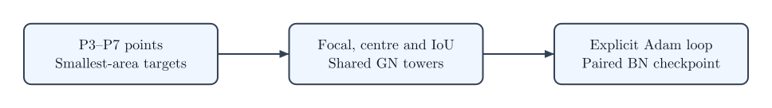
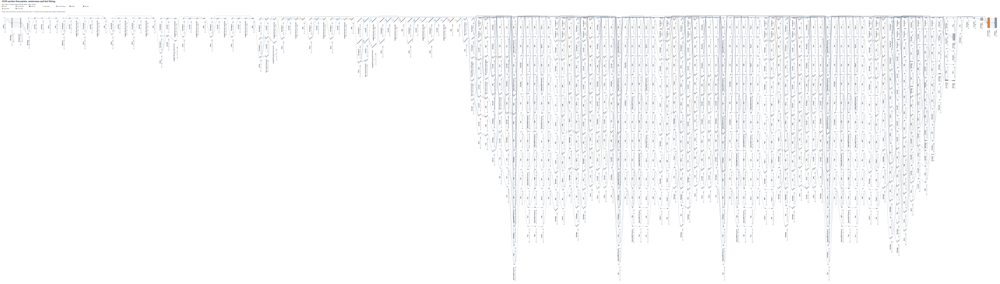
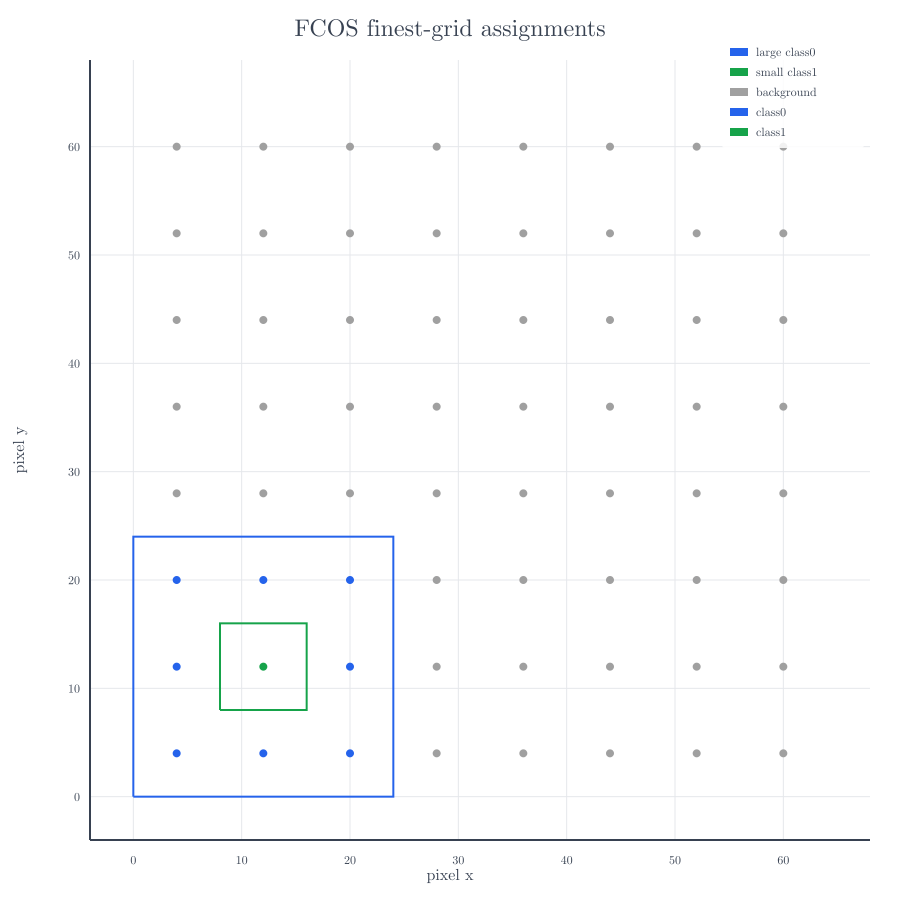
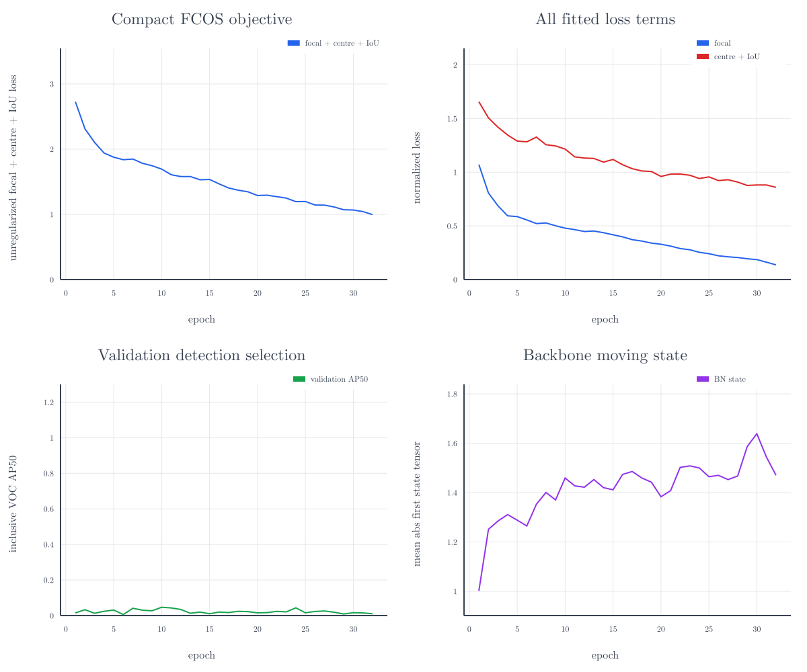
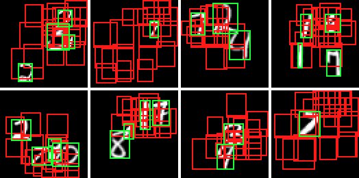

FCOS anchor-free points, centerness and IoU fitting
Abstract
Verify tensor point assignment and every derivative of focal, centerness and IoU objectives, check the full FCOS graph, then explicitly fit the complete compact detector with paired BN checkpoints and real digit-scene galleries.
Source example: examples/cpp/source/nn/1_convolutional_neural_networks/1.6_object_detection/fcos.cpp.
The method
FCOS replaces anchor shapes with per-point l/t/r/b distances and centerness. Shared group-normalized towers operate over P3–P7, while eligibility ranges and smallest-area matching assign tensor targets.
The concept diagram below is drawn by dm::graphics::Diagram. Its editable C++
source is the complete block below; regeneration uses the same datamunge toolchain
as the numerical examples. Exports consume the saved local SVG.
#include <dm/dm.hpp>
int main() {
std::filesystem::create_directories("build");
dm::graphics::Diagram diagram;
diagram.node("n0", {0.0, 0}, "P3–P7 points\nSmallest-area targets");
diagram.node("n1", {5.2, 0}, "Focal, centre and IoU\nShared GN towers");
diagram.node("n2", {10.4, 0}, "Explicit Adam loop\nPaired BN checkpoint");
diagram.edge("n0", "n1").edge("n1", "n2");
diagram.save_svg("build/fcos_concept.svg");
}
Executed tensor architecture
All displayed prediction branches are joined only to keep them reachable in one diagram; the flattened display output is not postprocessed detection or pose inference.
This figure executes the inference configuration shown in the code, using a zero-valued shape probe without fitting or loading a checkpoint. Named stage boundaries group whole subgraphs where available; other nodes retain functional-layer detail. Exact batch-inclusive shapes and reachable parameter totals come from the trace. Shared linear scales map spatial dimensions and channel counts to blocks; the one-pixel visibility floor is disclosed in the legend. Labels use compact monospace text, rotate counterclockwise and sit beside their own glyphs. Arrows flow left to right; wide diagrams scroll at native size on the website.
#include <dm/dm.hpp>
int main() {
namespace n = dm::nn;
namespace m = n::models;
n::set_num_threads(2);
std::filesystem::create_directories("build");
m::DetectionSceneConfig cfg;
m::FcosConfig model;
n::ParameterStore p(17), state(17);
cfg.scenes = 80;
cfg.seed = 11;
model.classes = 10;
model.image_size = 64;
model.backbone_depth = 18;
model.width_divisor = 8;
model.pyramid_width = 32;
model.grayscale = true;
model.groups = 8;
model.stride_scaled_distances = true;
n::Module architecture_model(
[&](const n::Tensor& image) {
const auto out = m::Fcos(p, state, image, model, false);
return n::concat(
{out.logits.reshape({1, -1}),
out.distances.reshape({1, -1}),
out.centerness.reshape({1, -1})},
1);
},
"FCOS anchor-free points, centerness and IoU fitting");
n::ModelPlotOptions options;
options.style = n::ModelPlotStyle::Flow;
options.detail = n::ModelPlotDetail::Blocks;
options.labels = {.type = n::ModelPlotLabel::NameAndShape, .size = 12, .wrap = 24};
options.spacing = {.layer = 24, .lane = 12, .label = 8, .margin = 20};
options.sizing.spatial_size = 96;
options.sizing.channel_size = 42;
options.sizing.minimum_extent = 1;
options.opacity = .8;
const auto diagram = architecture_model.plot(n::zeros({1, 64, 64, 1}), options);
diagram.save_svg("build/fcos_architecture.svg");
std::print(
"{} displayed nodes; {} reachable learned values.\n",
diagram.nodes().size(),
diagram.parameter_count());
}862 displayed nodes; 314684 reachable learned values.

Points, ranges and smallest-area assignment
FCOS predicts once at each point, without anchor shapes. Points are at stride/2 + integer*stride on P3–P7 (strides 8/16/32/64/128). Full level ranges are [0,64], [64,128], [128,256], [256,512], [512,infinity], with inclusive endpoints. A point must be *strictly* inside a box, its largest l/t/r/b distance must be in the level range, and optional centre sampling requires both centre distances strictly below 1.5*stride. The smallest eligible area wins, with first-truth ties. There is no forced positive for a missed object.
The fixture distinguishes strict interior, inclusive boundaries, overlapping objects, centre sampling and out-of-range points. Colour shows assigned class; grey points mark background. All assignment arithmetic is tensor based.
#include <dm/dm.hpp>
int main() {
namespace n = dm::nn;
namespace m = n::models;
m::TensorDetectionScenes data;
data.images = n::zeros({1, 64, 64, 1});
data.boxes = {n::tensor({0., 0., 24., 24., 4., 4., 12., 12.}, {2, 4})};
data.labels = {n::from_vector(std::vector<std::int64_t>{0, 1})};
const auto points = n::tensor({8., 8., 8., 0., 16., 4., 8., 8., 0., 24., 8., 8., 8.,
16., 32., 2., 2., 1., 0., 32., 8., 8., 8., 17., 32.},
{5, 5});
const auto t = m::MakeFcosTargets(points, data, {0}, 2);
if (t.positive.to_vector<int>() != std::vector<int>{1, 1, 1, 0, 0} ||
t.classes.to_vector<int>() != std::vector<int>{0, 1, 1, 0, 1, 0, 0, 0, 0, 0})
return 1;
if (m::MakeFcosTargets(points, data, {0}, 2, 0).positive.at({0, 3}) != 1)
return 1;
data.boxes[0] = n::tensor({0., 0., 24., 24., 8., 8., 16., 16.}, {2, 4});
const auto grid = m::FcosPoints({8, 4, 2, 1, 1});
const auto target = m::MakeFcosTargets(grid, data, {0}, 2);
const auto values = grid.to_vector<double>();
const auto mask = target.positive.to_vector<int>(),
labels = n::argmax(target.classes, 2).to_vector<int>();
auto plot = dm::graphics::RPlot::create();
plot.lines({0, 24, 24, 0, 0}, {0, 0, 24, 24, 0}, "large class0", {37, 99, 235})
.lines({8, 16, 16, 8, 8}, {8, 8, 16, 16, 8}, "small class1", {22, 163, 74});
std::vector<double> bx, by, ax, ay, cx, cy;
for (int i = 0; i < 64; ++i) {
if (!mask[i]) {
bx.push_back(values[i * 5 + 1]);
by.push_back(values[i * 5]);
} else if (labels[i] == 0) {
ax.push_back(values[i * 5 + 1]);
ay.push_back(values[i * 5]);
} else {
cx.push_back(values[i * 5 + 1]);
cy.push_back(values[i * 5]);
}
}
plot.points(bx, by, "background", {160, 160, 160})
.points(ax, ay, "class0", {37, 99, 235})
.points(cx, cy, "class1", {22, 163, 74})
.title("FCOS finest-grid assignments")
.x_label("pixel x")
.y_label("pixel y")
.x_limits(-4, 68)
.y_limits(-4, 68)
.size(900, 900)
.margins(90, 30, 60, 60);
std::filesystem::create_directories("build");
plot.save_svg("build/fcos_points.svg");
std::print("Fixture5 point assignments pass, including strict interior and inclusive range "
"boundary. Compact64 has{} points; full640 has{}. Centerness[2,3,8,12]={:.6f}.\n",
grid.shape()[0], m::FcosPoints({80, 40, 20, 10, 5}).shape()[0],
m::FcosCenterness(n::tensor({2., 3., 8., 12.})).item());
}Fixture5 point assignments pass, including strict interior and inclusive range boundary. Compact64 has86 points; full640 has8525. Centerness[2,3,8,12]=0.250000.

Centerness and the complete objective
Centerness is sqrt(min(l,r)/max(l,r)*min(t,b)/max(t,b)): one at the box
centre and zero on/outside a boundary. Classification uses alpha .25/gamma 2
sigmoid focal loss. Positive centerness BCE and classification divide by batch
positive count floored at one. Regression is -log((I+1)/(U+1)), weighted by
target centerness and divided by total centerness (floor 1e-6). The *plus one*
is area smoothing, not an epsilon. An all-background batch keeps focal learning
but has exact zero regression and centerness gradients.
#include <dm/dm.hpp>
int main() {
namespace n = dm::nn;
const auto type = n::DType::Float64;
const auto l = n::zeros({1, 2, 2}, type).requires_grad_(),
d = n::from_vector(std::vector<double>{.8, 1.3, 2.1, 2.7, 2, 3, 4, 5}, {1, 2, 4})
.requires_grad_(),
c = n::zeros({1, 2}, type).requires_grad_();
n::models::FcosTargets t{
n::from_vector(std::vector<double>{1, 0, 0, 0}, {1, 2, 2}),
n::from_vector(std::vector<double>{1, 2, 3, 4, 0, 0, 0, 0}, {1, 2, 4}),
n::from_vector(std::vector<double>{1, 0}, {1, 2}),
n::from_vector(std::vector<double>{.6, 0}, {1, 2})};
const auto loss = n::models::FcosLoss(l, d, c, t);
const auto g = n::grad(loss, {l, d, c});
if (std::abs(loss.item() - (1.625 * std::log(2.) + std::log(25. / 12.6))) > 1e-12)
return 1;
const double a = .125 + .25 * std::log(2.);
double error = 0;
for (int i = 0; i < 4; ++i)
error = std::max(error, std::abs(g[0].reshape({4}).at({i}) - (i ? .75 * a : -.25 * a)));
for (int i = 0; i < 8; ++i)
error = std::max(error, std::abs(g[1].reshape({8}).at({i}) - (i >= 4 ? 0
: i % 2 ? -2.9 / 12.6
: -4. / 12.6)));
error = std::max(error, std::abs(g[2].at({0, 0}) + .1));
if (error > 1e-12)
return 1;
t.classes = n::zeros({1, 2, 2}, type);
t.positive = n::zeros({1, 2}, type);
t.centerness = n::zeros({1, 2}, type);
const auto bg = n::models::FcosLoss(l, d, c, t);
if (std::abs(bg.item() - .75 * std::log(2.)) > 1e-12)
return 1;
for (const auto &v : n::grad(bg, {d, c}))
if (n::count_nonzero(v).item() != 0)
return 1;
std::print("Full focal/BCE/IoU fixture loss{:.12f}; every analytic derivative maximum "
"error{:.12f}. All-background loss{:.12f}, exact zero centre/box derivatives.\n",
loss.item(), error, bg.item());
}Full focal/BCE/IoU fixture loss1.811543179321; every analytic derivative maximum error0.000000000000. All-background loss0.519860385420, exact zero centre/box derivatives.
Full graph and compact source adaptation
Full FCOS has 36,426,138 learned and 53,120 BN-state scalars, a ResNet50
backbone, 256-channel FPN and shared four-layer GN32 towers. Centerness comes
from the *classification* tower, following the original source model. Each
pyramid level learns a scalar before exp(min(raw*scale,20)); distances are
positive. The full source graph below checks all 218 learned tensor derivatives
at 128 pixels, and counts 8525 predictions at 640. It is initialized validation,
without pretraining or a trained COCO claim.
#include <dm/dm.hpp>
int main() {
namespace n = dm::nn;
n::set_num_threads(2);
n::ParameterStore p(17), state(17);
n::models::FcosConfig c;
c.image_size = 128;
c.update_stats = false;
const auto net = n::models::Fcos(
p, state, n::sin(.13 * n::arange(0, 128 * 128 * 3)).reshape({1, 128, 128, 3}), c, true);
if (p.count() != 36426138 || state.count() != 53120 || net.points != 341)
return 1;
const auto objective = n::mean(n::square(net.logits)) + n::mean(n::square(net.distances)) +
n::mean(n::square(net.centerness));
const auto g = n::grad(objective, p.parameters());
if (g.size() != 218)
return 1;
for (const auto &v : g)
if (!v.defined() || !std::isfinite(n::sum(n::square(v)).item()))
return 1;
std::print("Full-weight FCOS128: {} learned/{} state scalars,{} points; all{} learned "
"tensor derivatives defined and finite. Full640: {} points.\n",
p.count(), state.count(), net.points, g.size(),
n::models::FcosPoints({80, 40, 20, 10, 5}).shape()[0]);
}Full-weight FCOS128: 36426138 learned/53120 state scalars,341 points; all218 learned tensor derivatives defined and finite. Full640: 8525 points.
The compact source adaptation uses ResNet18 with widths divided by eight, 32-channel FPN/GN8 towers, 314,684 learned and 1,200 BN-state scalars. This report uses 64-pixel scenes, range multiplier .125 and stride-scaled exp distances (the source's larger128-pixel run uses range multiplier .25). Every backbone/tower/scale parameter is fitted. The split is the same bounded 64 fit/16 validation and eight test MNIST-derived scenes used by the other detection reports. No test scene selects epochs.
#include <dm/dm.hpp>
int main() {
namespace n = dm::nn;
n::set_num_threads(2);
std::filesystem::path cache;
if (const auto *p = std::getenv("DATAMUNGE_DATA_DIR"))
cache = p;
else if (const auto *p = std::getenv("XDG_CACHE_HOME"))
cache = std::filesystem::path(p) / "datamunge/datasets";
else
cache = std::filesystem::path(std::getenv("HOME")) / ".cache/datamunge/datasets";
dm::datasets::fetch("mnist", (cache / "mnist").string());
const auto train = n::load_mnist((cache / "mnist").string(), "train");
n::models::DetectionSceneConfig cfg;
cfg.scenes = 80;
cfg.seed = 11;
const auto scenes = n::models::MakeTensorDetectionScenes(
n::slice_axis(train.images, 0, 0, 2048), n::slice_axis(train.labels, 0, 0, 2048), cfg);
std::vector<n::Tensor> boxes(scenes.boxes.begin(), scenes.boxes.begin() + 8);
const auto preview = n::models::DrawDetectionBoxes(n::slice_axis(scenes.images, 0, 0, 8),
boxes, {.1, 1., .2});
std::filesystem::create_directories("build");
n::save_image_grid(preview, "build/fcos_scenes.png", 4, 0., 1., 4, 1., 2);
std::int64_t objects = 0;
for (const auto &b : scenes.boxes)
objects += b.shape()[0];
std::print("80 generated training/validation scenes; {} accepted digits. Preview: first "
"eight training scenes with tight green boxes.\n",
objects);
}80 generated training/validation scenes; 195 accepted digits. Preview: first eight training scenes with tight green boxes.

The visible Adam(.001) loop runs 32 epochs, batch four, 512 updates, with
.00005*sum(kernel²) added to the displayed objective. Leaves are warmed
before optimizer construction. BN state is updated only by training forwards
and saved/restored with learned weights at strict validation AP50 improvement.
GN affine parameters and per-level scalars are optimized but excluded from L2.
Inference keeps class probability strictly above .01, then ranks by
sqrt(sigmoid(class)*sigmoid(centerness)). This can retain a combined score
below .01. It clips boxes, removes zero area, takes up to 1000 candidates
across classes per image, applies class-wise IoU .6 NMS and caps100/image.
Stable point/class order resolves score ties; source partial_sort left them
unspecified. The native tests check threshold order and the global cap.
#include <dm/dm.hpp>
int main() {
namespace n = dm::nn;
namespace m = n::models;
n::set_num_threads(2);
std::filesystem::path cache;
if (const auto *p = std::getenv("DATAMUNGE_DATA_DIR"))
cache = p;
else if (const auto *p = std::getenv("XDG_CACHE_HOME"))
cache = std::filesystem::path(p) / "datamunge/datasets";
else
cache = std::filesystem::path(std::getenv("HOME")) / ".cache/datamunge/datasets";
dm::datasets::fetch("mnist", (cache / "mnist").string());
const auto digits = n::load_mnist((cache / "mnist").string(), "train");
m::DetectionSceneConfig cfg;
cfg.scenes = 80;
cfg.seed = 11;
const auto scenes = m::MakeTensorDetectionScenes(
n::slice_axis(digits.images, 0, 0, 2048), n::slice_axis(digits.labels, 0, 0, 2048), cfg);
m::FcosConfig model;
model.classes = 10;
model.image_size = 64;
model.backbone_depth = 18;
model.width_divisor = 8;
model.pyramid_width = 32;
model.grayscale = true;
model.groups = 8;
model.stride_scaled_distances = true;
const auto anchors = m::FcosPoints({8, 4, 2, 1, 1}, .125);
std::vector<std::int64_t> val_rows(16);
std::iota(val_rows.begin(), val_rows.end(), 64);
std::vector<int> val_ids(val_rows.begin(), val_rows.end());
n::ParameterStore p(17), state(17);
{
n::NoGradGuard guard;
const auto warm = m::Fcos(p, state, n::zeros({1, 64, 64, 1}), model, false);
if (warm.points != anchors.shape()[0])
return 1;
}
if (p.count() != 314684 || state.count() != 1200)
return 1;
// Inference borrows this scope's p/anchors; every class and default is handled by tensor kernels.
const auto detect = [&](const m::TensorDetectionScenes &data,
const std::vector<std::int64_t> &rows) {
n::NoGradGuard guard;
const auto net = m::Fcos(p, state, 2. * n::gather(data.images, n::from_vector(rows)) - 1.,
model, false);
return m::DecodeFcosDetections(net, anchors, n::from_vector(rows), 64, 64);
};
// Annotation conversion is presentation of existing tensor boxes/IDs, with no box arithmetic.
const auto truth_records = [](const m::TensorDetectionScenes &data,
const std::vector<std::int64_t> &rows) {
std::vector<m::DetectionEvaluationTruth> out;
for (auto row : rows) {
const auto boxes = n::boxes_to_vector(data.boxes[row]);
const auto labels = data.labels[row].to_vector<int>();
for (std::size_t i = 0; i < boxes.size(); ++i)
out.push_back({int(row), labels[i], boxes[i]});
}
return out;
};
const auto validation_truth = truth_records(scenes, val_rows);
n::OptimizerConfig adam_config;
adam_config.kind = n::OptimizerKind::Adam;
n::Optimizer adam(p, .001, adam_config);
n::BatchOrder batches(64, 4, 29);
std::vector<n::Tensor> kernels;
for (const auto &leaf : p.parameters())
if (leaf.dim() >= 2)
kernels.push_back(leaf);
std::filesystem::create_directories("build");
const std::string checkpoint = "build/fcos_best.npz";
std::vector<double> epochs, losses, ce_trace, reg_trace, ap_trace, scale_trace;
double best = -1;
int selected = 0, steps = 0;
std::print("| epoch | focal + centre + IoU loss | CE | regression | val AP50 "
"|\n|---:|---:|---:|---:|---:|\n");
for (int epoch = 1; epoch <= 32; ++epoch) {
batches.begin_epoch();
double total = 0, total_ce = 0, total_reg = 0;
std::size_t seen = 0;
for (auto rows = batches.next(); !rows.empty(); rows = batches.next()) {
const auto net = m::Fcos(
p, state, 2. * n::gather(scenes.images, n::from_vector(rows)) - 1., model, true);
const auto targets = m::MakeFcosTargets(anchors, scenes, rows, 10, 1.5);
const auto focal = n::sum(m::SigmoidFocalLoss(net.logits, targets.classes)) /
n::maximum(n::sum(targets.positive), n::ones({}));
const auto objective = m::FcosLoss(net, targets);
n::Tensor penalty = n::zeros({});
for (const auto &kernel : kernels)
penalty = penalty + n::sum(n::square(kernel));
if (!std::isfinite(objective.item()))
return 1;
total += objective.item() * rows.size();
total_ce += focal.item() * rows.size();
total_reg += (objective - focal).item() * rows.size();
seen += rows.size();
adam.minimize(objective + .00005 * penalty);
++steps;
}
const auto metric =
m::EvaluateDetectionDataset(m::DetectionEvaluationRecords(detect(scenes, val_rows)),
validation_truth, val_ids, false, true);
epochs.push_back(epoch);
losses.push_back(total / double(seen));
ce_trace.push_back(total_ce / double(seen));
reg_trace.push_back(total_reg / double(seen));
ap_trace.push_back(metric.ap50.item());
scale_trace.push_back(n::mean(n::abs(state.at(state.names()[0]))).item());
if (metric.ap50.item() > best) {
best = metric.ap50.item();
selected = epoch;
p.save(checkpoint);
state.save("build/fcos_best_state.npz");
}
std::print("| {} | {:.6f} | {:.6f} | {:.6f} | {:.6f} |\n", epoch, losses.back(),
ce_trace.back(), reg_trace.back(), ap_trace.back());
}
p.load(checkpoint);
state.load("build/fcos_best_state.npz");
const auto restored =
m::EvaluateDetectionDataset(m::DetectionEvaluationRecords(detect(scenes, val_rows)),
validation_truth, val_ids, false, true);
if (std::abs(restored.ap50.item() - best) > 1e-12)
return 1;
const auto test_digits = n::load_mnist((cache / "mnist").string(), "test");
cfg.scenes = 8;
cfg.seed = 22;
const auto test =
m::MakeTensorDetectionScenes(n::slice_axis(test_digits.images, 0, 0, 512),
n::slice_axis(test_digits.labels, 0, 0, 512), cfg);
std::vector<std::int64_t> test_rows(8);
std::iota(test_rows.begin(), test_rows.end(), 0);
std::vector<int> test_ids(test_rows.begin(), test_rows.end());
const auto output = detect(test, test_rows);
const auto records = m::DetectionEvaluationRecords(output);
const auto truth = truth_records(test, test_rows);
const auto voc = m::EvaluateDetectionDataset(records, truth, test_ids, false, true),
coco = m::EvaluateDetectionDataset(records, truth, test_ids, true);
// Preserve the exact evaluated boxes and scores for an independent AP recount.
std::vector<double> saved_predictions, saved_truth;
for(const auto& detection:records){saved_predictions.insert(saved_predictions.end(),{double(detection.image),double(detection.label),double(detection.score),double(detection.box[0]),double(detection.box[1]),double(detection.box[2]),double(detection.box[3])});}
for(const auto& target:truth){saved_truth.insert(saved_truth.end(),{double(target.image),double(target.label),double(target.box[0]),double(target.box[1]),double(target.box[2]),double(target.box[3]),double(target.difficult),double(target.crowd)});}
n::save_npz("build/fcos_detections_"+std::string("0")+".npz",{{"predictions",n::from_vector(saved_predictions,{std::int64_t(records.size()),7})},{"truth",n::from_vector(saved_truth,{std::int64_t(truth.size()),8})},{"images",n::from_vector(test_ids)},{"metrics",n::stack({voc.ap50,coco.ap75,coco.ap},0)}});
std::vector<n::Tensor> predicted;
const auto image_ids = output.images.to_vector<int>();
for (int image = 0; image < 8; ++image) {
std::vector<std::int64_t> index;
for (std::size_t j = 0; j < image_ids.size(); ++j)
if (image_ids[j] == image)
index.push_back(std::int64_t(j));
predicted.push_back(n::gather(output.boxes, n::from_vector(index)));
}
const auto green = m::DrawDetectionBoxes(test.images, test.boxes, {.1, 1., .2}),
red = m::DrawDetectionBoxes(test.images, predicted, {1., .1, .1}),
raw = test.images * n::ones({1, 1, 1, 3});
n::save_image_grid(n::where(n::any(n::not_equal(green, raw), {3}, true), green, red),
"build/fcos_detections.png", 4, 0., 1., 4, 1., 2);
std::filesystem::create_directories("figures");
std::filesystem::copy_file("build/fcos_detections.png", "figures/fcos_detections.png",
std::filesystem::copy_options::overwrite_existing);
auto a = dm::graphics::RPlot::create();
a.lines(epochs, losses, "focal + centre + IoU", {37, 99, 235})
.title("Compact FCOS objective")
.x_label("epoch")
.y_label("unregularized focal + centre + IoU loss")
.y_limits(0, 1.3 * *std::max_element(losses.begin(), losses.end()));
auto b = dm::graphics::RPlot::create();
b.lines(epochs, ce_trace, "focal", {37, 99, 235})
.lines(epochs, reg_trace, "centre + IoU", {220, 38, 38})
.title("All fitted loss terms")
.x_label("epoch")
.y_label("normalized loss")
.y_limits(0, 1.3 * std::max(*std::max_element(ce_trace.begin(), ce_trace.end()),
*std::max_element(reg_trace.begin(), reg_trace.end())));
auto c = dm::graphics::RPlot::create();
c.lines(epochs, ap_trace, "validation AP50", {22, 163, 74})
.title("Validation detection selection")
.x_label("epoch")
.y_label("inclusive VOC AP50")
.y_limits(0, 1.3);
auto d = dm::graphics::RPlot::create();
d.lines(epochs, scale_trace, "BN state", {147, 51, 234})
.title("Backbone moving state")
.x_label("epoch")
.y_label("mean abs first state tensor")
.y_limits(*std::min_element(scale_trace.begin(), scale_trace.end()) - .1,
*std::max_element(scale_trace.begin(), scale_trace.end()) + .2);
dm::graphics::RLayout::create(2, 2)
.add(a)
.add(b)
.add(c)
.add(d)
.size(1200, 1000)
.fit_panels()
.save_svg("build/fcos_training.svg");
std::print(
"{} learned scalars, {} Adam updates; selected epoch {}, validation AP50 {:.6f}. Test: "
"{} digits in eight scenes, inclusive VOC AP50 {:.6f}, COCO AP75 {:.6f}, AP50:95 "
"{:.6f}, {} detections. Selected mean absolute first BN state {:.6f}; paired learned "
"and BN state restored.\n",
p.count(), steps, selected, best, truth.size(), voc.ap50.item(), coco.ap75.item(),
coco.ap.item(), records.size(), n::mean(n::abs(state.at(state.names()[0]))).item());
}| epoch | focal + centre + IoU loss | CE | regression | val AP50 |
|---|---|---|---|---|
| 1 | 2.727379 | 1.071082 | 1.656297 | 0.014645 |
| 2 | 2.311277 | 0.805831 | 1.505445 | 0.032857 |
| 3 | 2.104148 | 0.685929 | 1.418219 | 0.012804 |
| 4 | 1.939778 | 0.593540 | 1.346237 | 0.024169 |
| 5 | 1.876284 | 0.586494 | 1.289791 | 0.030770 |
| 6 | 1.838170 | 0.555336 | 1.282834 | 0.005628 |
| 7 | 1.848313 | 0.521388 | 1.326926 | 0.041022 |
| 8 | 1.782898 | 0.527120 | 1.255777 | 0.030080 |
| 9 | 1.746022 | 0.501356 | 1.244666 | 0.026864 |
| 10 | 1.693782 | 0.478906 | 1.214875 | 0.046688 |
| 11 | 1.607895 | 0.465122 | 1.142772 | 0.042856 |
| 12 | 1.579498 | 0.447566 | 1.131932 | 0.034155 |
| 13 | 1.580105 | 0.452018 | 1.128088 | 0.012957 |
| 14 | 1.530268 | 0.436320 | 1.093948 | 0.019482 |
| 15 | 1.535137 | 0.416698 | 1.118439 | 0.010162 |
| 16 | 1.466919 | 0.397486 | 1.069433 | 0.019663 |
| 17 | 1.404007 | 0.371519 | 1.032488 | 0.016946 |
| 18 | 1.370031 | 0.358565 | 1.011465 | 0.023933 |
| 19 | 1.346035 | 0.339449 | 1.006586 | 0.022023 |
| 20 | 1.289196 | 0.329084 | 0.960112 | 0.015275 |
| 21 | 1.293889 | 0.311769 | 0.982120 | 0.016430 |
| 22 | 1.271730 | 0.288831 | 0.982899 | 0.023613 |
| 23 | 1.249297 | 0.277677 | 0.971620 | 0.020664 |
| 24 | 1.194895 | 0.253701 | 0.941194 | 0.043277 |
| 25 | 1.197197 | 0.240960 | 0.956237 | 0.015486 |
| 26 | 1.143237 | 0.221345 | 0.921893 | 0.023070 |
| 27 | 1.141458 | 0.211798 | 0.929660 | 0.025690 |
| 28 | 1.113078 | 0.205256 | 0.907822 | 0.018552 |
| 29 | 1.070269 | 0.193672 | 0.876597 | 0.008872 |
| 30 | 1.066781 | 0.185787 | 0.880994 | 0.016026 |
| 31 | 1.042549 | 0.161682 | 0.880866 | 0.014749 |
| 32 | 0.995730 | 0.136574 | 0.859157 | 0.010275 |
314684 learned scalars, 512 Adam updates; selected epoch 10, validation AP50 0.046688. Test: 23 digits in eight scenes, inclusive VOC AP50 0.021197, COCO AP75 0.000000, AP50:95 0.004192, 800 detections. Selected mean absolute first BN state 1.459143; paired learned and BN state restored.


Regenerate adjacent views from this run
#include <dm/dm.hpp>
int main(){std::filesystem::copy_file("build/fcos_detections.png","build/export_fcos_detections.png",std::filesystem::copy_options::overwrite_existing);}Conclusion
The executed results above describe the current selected checkpoint and its held-out detection quality. Small scene sets and bounded schedules do not establish architecture rankings. Inspect localization, missed targets and false positives together with validation selection and the actual prediction gallery.
Point/range semantics and the complete objective are checked before fitting. The bounded compact run evaluates its restored validation-selected parameters and BN state on held-out scenes; it does not claim full-dataset detector accuracy.
References
- [Tian et al. (2019), FCOS: Fully Convolutional One-Stage Object Detection](https://arxiv.org/abs/1904.01355).
- [Authors’ FCOS implementation](https://github.com/tianzhi0549/FCOS).